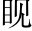

維年月日，潮州刺史韓愈，使軍事衙推秦濟，以羊一、豬一投惡溪之潭水，以與鱷諤。魚食，而告之初，公至潮，問民疾苦，皆曰惡溪有鱷魚，食民產且盡。數日，公令其屬秦濟，以一羊、一豚投溪水而祝之。曰：
昔先王既有天下，列山澤，罔同「網」。繩擉錯。刃，以除蟲蛇惡物為民害者，驅而出之四海之外列，遮道也。擉，刺也。○正議發端，便不可犯。。及后王德薄，不能遠有，則江、漢之間，尚皆棄之以與蠻、夷、楚、越，況潮，嶺海之間，去京師萬里哉！鱷魚之涵淹卵育於此，亦固其所潮在嶺外、海內，較江、漢更遠，毋怪為鱷魚所據。涵淹，潛伏也。卵育，生息也。○先歸咎后王，故意放寬一步。妙。。今天子嗣唐位，神聖慈武，四海之外，六合之內，皆撫而有之能遠有矣。，況禹跡所揜，揚州之近地，刺史、縣令之所治，出貢賦以供天地宗廟百神之祀之壤者哉揜，止也。潮於古為揚州之境，以四海、六合言之，則潮地又甚近也。○二十四字作一句讀。！鱷魚其不可與刺史雜處此土也此句是一篇綱領。前將天子立大議論，此下專在與刺史爭土上發議。！
刺史受天子命，守此土，治此民，而鱷魚睅音緩。然不安溪潭，據處食民、畜休去聲。、熊、豕、鹿、麞，以肥其身，以種其子孫，與刺史亢拒，爭為長掌。雄睅，目出貌。據處，謂據其地而處之也。食民、畜，謂食人與六畜也。刺史欲安民，而鱷魚為害若此，是與亢拒爭雄矣。。刺史雖駑弱，亦安肯為鱷魚低首下心，伈伈心上聲。賢上聲。，為民吏羞，以偷活於此邪伈伈，恐懼貌。？且承天子命以來為吏，固其勢不得不與鱷魚辨，小目貌。。
鱷魚有知，其聽刺史言總喝一句，起下文。：潮之州，大海在其南，鯨、鵬之大，蝦、蟹之細，無不容歸，以生以食，鱷魚朝發而夕至也為鱷魚尋去路。。今與鱷魚約，盡三日，其率醜類南徙於海，以避天子之命吏。三日不能，至五日；五日不能，至七日為鱷魚限日期。；七日不能，是終不肯徙也，是不有刺史、聽從其言也。不然，則是鱷魚冥頑不靈，刺史雖有言，不聞不知也層疊而下，犀利無前。。夫傲天子之命吏，不聽其言，不徙以避之，與冥頑不靈而為民物害者，皆可殺閃電轟雷，一齊俱發。。刺史則選材技吏民，操強弓毒矢，以與鱷魚從事，必盡殺乃止。其無悔是夕有暴風震雷，起湫水中。數日，水盡涸，西徙六十里，自是潮州無鱷魚患。！
全篇只是不許鱷魚雜處此土，處處提出「天子」二字、「刺史」二字壓服他。如問罪之師，正正堂堂之陣，能令反側子心寒膽慄。